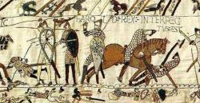

MACLASSE.COM

Les vikings, en quête de nouveaux territoires, vont effectuer de nombreux raids et pillages dans le royaume franc pendant plus d'un siècle. Ils lancent leurs raids à partir de bases fortifiées où ils sont installés, comme Noirmoutier, Bayonne... Ils profitent des fleuves et des cours d'eau avec leurs bateaux légers (snekkja) pour attaquer par surprise la population.
Ils s'attaquent principalement aux richesses des monastères, procèdent à des enlèvements pour demander une rançon ou vendre des esclaves, mais ils s'attaquent aussi à de grande ville comme Angers, Orléans, Paris...
Les rois carolingiens sont incapables d'empêcher les invasions normandes. Rollon (image de droite), Vikking installé à l'embouchoure de la Seine assiège Paris en 910 puis Chartres. Pour mettre un terme à ces attaques, le roi de France, Charles le Simple, lui offre le duché de Normandie à condition qu'il se fasse baptiser. Rollon accepte et devient donc chrétien, duc de Normandie et vassal du roi de France en 911.
Beaucoup de vikings vont venir s'installer en Normandie. Ils s'appellent désormais les Normands. Guillaume le Conquérant (image de droite) est le seigneur normand le plus célèbre, sa conquête de l'Angleterre en 1066 est racontée dans les tapisseries de Bayeux.
As-tu compris et retenu cette leçon? Es tu capable de répondre à quelques questions?
- Par quel accès arrivent les vikings lors de leur pillage ?
- Cite deux villes attaquées par les vikings ?
- Comment le roi de France met fin aux invasions normandes ?
- Comment s'appelle le premier duc de Normandie Viking ?
- Quel chef normand a conquis l'Angleterre en 1066 ?
Les vikings attaquent le royaume franc en arrivant par les fleuves à partir de leurs bases. Pour mettre fin à ces raids, le roi de France offre la Normandie à Rollon, chef viking. Guillaume le Conquérant est le normand le plus célèbre pour sa conquête de l'Angleterre, racontée dans les tapisseries de Bayeux.


Mentions légales / Qui sommes-nous ? / Plan du site
Nos matières : français - mathématiques - histoire - sciences - arts visuels